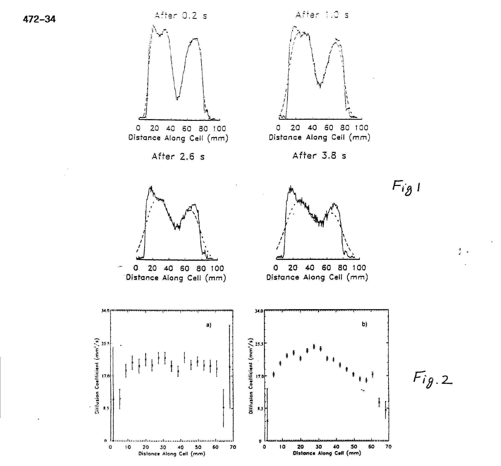

Diffusion Imaging with Hyperpolarized 3He Gas
(received 12/16/97)
Dear Barry,
We have used MRI of hyperpolarized 3He to demonstrate some novel aspects of gas diffusion. Two different techniques were used. First, a slice was burned into a one-dimensional image by inverting the spins in the slice and diffusion was studied by measuring the magnetization as it filled the depleted slice. A diffusion coefficient was determined by the fit of these data. Second, one-dimensional diffusion images were made using a Stejskal-Tanner PGSE method. This was done with and without a temperature gradient present, showing that the effect of temperature can be dynamically monitored by such diffusion images.
The experiments were done in a imager/spectrometer (Nalorac Cryogenics Corp.) with a 1.9 T, horizontal bore, superconducting magnet (Oxford) having a bore diameter of 31 cm. The gas was hyperpolarized in the fringe field of the 1.9 T magnet at a distance of 2m by laser optical pumping in the presence of rubidium molecules (1,2). The He gas was at 7 atm pressure in a cylindrical cell with inner dimensions 7.0 cm long and 2.2 cm inner diameter. The polarization time constant of the cell (T1) was about 15 h and with 4 h of optical pumping a polarization of about 5% was achieved. This is over 3 orders of magnitude greater than that from conventional thermal polarization and significantly improves the ability to image the gas.
A series of one-dimensional images over time was obtained in which the diffusion of two populations of nuclei could be seen in a manner similar to that of (3). First the magnetization of nuclei in a thin central section of the cylinder was inverted. Then, images were taken every 0.2s for a total of 5s, using a constant flip angle of 4.5° . These images are normalized to the same total intensity because a fraction (sin(4.5° )) of the magnetization is lost with each image acquisition. The He diffusion coefficient was measured with these data using a simple model. A delta function spike in density will, through diffusion, form a density profile which is Gaussian whose variance is proportional to the diffusion coefficient and the time over which diffusion has taken place. We therefore modeled each one-dimensional image by convolving the first image with a Gaussian whose variance was proportional to a candidate diffusion coefficient D times t; the time interval separating the two images is V= 2Dt. We searched for the value of D which minimized the error between the predicted and measured values. A comparison of the data to the modeled data with the best-fitting value of D is shown in Fig. 1 for a few selected time intervals. A value of D = (21.3 ± 0.4) mm2/s was obtained.
Next, one-dimensional diffusion images were made using the technique of Stejskal and Tanner (4). A diffusion coefficient was calculated at each point in the image by taking the ratio of the image intensities with and without a previous bipolar magnetic field gradient in place. D can be calculated from the signal/ratio e-ibD where b is known from the bipolar gradient parameters. Diffusion can be affected by physical boundaries as well as by temperature or pressure. Diffusion images were made both at thermal equilibrium (Fig. 2a) and with a thermal gradient (Fig. 2b) produced by holding the right end (as viewed in the figure) of the cell in a liquid nitrogen exhaust plume for a few minutes. Error bars in Fig. 2a are larger than those in Fig. 2b because the data of Fig. 2a were obtained after a shorter polarization time and therefore had lower signal. The diffusion measured from the ends of the cylinder is consistent with that measured from observing the diffusion of a section of inverted magnetization, described above. The plot on the right shows a diffusion image when the cylinder had a thermal gradient.

We see that the diffusion coefficient decreases with temperature. We have presented two different experimental techniques which yielded the 3He self-diffusion coefficient of(21.3 ± 0.4) mm2/s. A previous NMR measurement (5) at 300 K and at 1 Torr yields a self- diffusion coefficient of (27.1 ± 1.5) mm2/s at 7 atm when scaled by a factor of 5320, assuming a linear pressure dependence. Many measurements of He-He diffusion have been made at atmospheric pressures using techniques other than NMR as summarized in (6). All of these agree with each other to within 3% and after correction for isotopic mass dependence and for pressure dependence yields a value of 28.0 mm2/s at 7 atm. Considering the type and scale of corrections needed to compare our results to previous results, and the uncertainty of the pressure in our cell, the difference may not be significant.
References
1. N.D. Bhasker, W. Happer, and T. McClelland, Phys. Rev. Lett. 49, 25 (1982).
2. W. Happer, E. Miron, S. Schaefer, D. Schreiber, W.A. van Wiljngaarden, and X. Zeng, Phys. Rev. A 29, 3092 (1984).
3. M. Pfeffer and O. Lutz, J. Magn. Reson. A 113, 108(1995). 4. E.O. Stejskal and J.E. Tanner, J. Chem. Phys. 42, 288 (1965).
5. R. Barbe, M. Leduc, and F. Lalod, J. Phys. 35, 935 (1974)
6. J.C. Liner and S. Weissman, J. Chem. Phys. 56, 2288 (1972).
Best regards,
D.M. Schmidt1, J.S. George1, S.I. Penttila1, A. Caprihan, and E. Fukushima
1
Los Alamos National Laboratory, Los Alamos, NM 87545